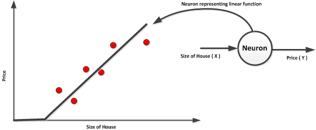
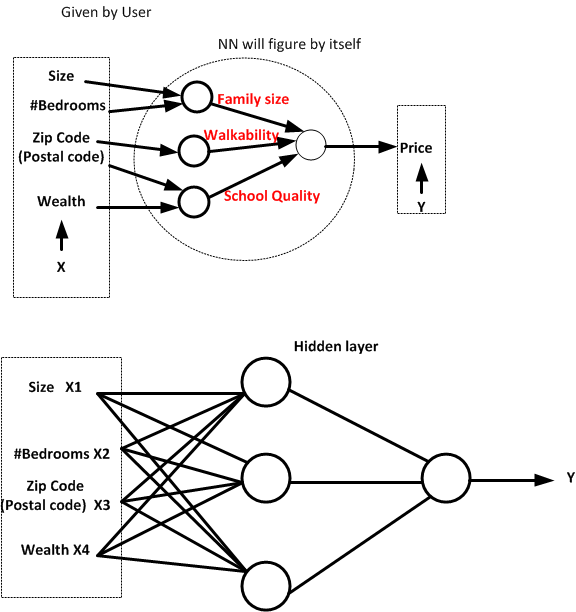

Week 1 Summary
Welcome
In this video Andrew Ng. walkthrough the deep learning specialization which includes Neural Networks and deep learning, hyperparameter tuning, structural machine learning projects, CNN and finally Recurrent Neural Network. The quote by Andrew Ng. that is AI is the new Electricity. This quote is really a powerful words that has already shown a disruptive of using AI across industries just like the electrification does in the Industrial Era. The main motive in this specialization is to be able to build and tunes deep learning model and apply to various problems across industries.
What is Neural Network?
Neural network is basically implements a function that maps a series of input to output. Let us consider a simple housing price prediction problem, that given the size of the house (in square feet), the job of this prediction is to predicts the price.

The line that is shown in the figure is a ReLU (Rectified Linear Unit) function. Neural Network is a stacking of these small neuron.

In the figure below, we have three properties or features of the housing. It can be the size, number of bedrooms, the postal code and maybe wealth. Taking the size and number of bedrooms we can predicts the family size. Also taking the Zip code, we can map the walkability distance and finally if we take postal code and wealth we can predicts the quality of the school in that area. This layers can be assume to be predicted by the neural network and let neural network decides what to do with it. We call this kind of layer as hidden layers. The goal of neural network is to takes input and predict the output or an approximation of input to output. The layer that is not the input and output are called the hidden layer.
Supervised Learning with Neural Networks
one type of economical value by ML is supervised ML. Cleverly choosen of X and Y.
Neural Network Example - Standard NN - Convolutional NN - Recurrent NN
There are two types of data: Structure data and unstructure data.
Why deeplearning taking off?
Changes from Sigmoid to RELU due to gradient. Convergent is fast. Gradient and decent works faster. - Data -Algorithm -Computation
Iteration in DL Idea -> Code -> Experiment
Course Resources
deeplearning.ai
fine representation pixel–> co-ordinate–>matrix multiply. Generic principle. Represent from one to linear representation.
Read the literature and look for something wrong and then work on it.
Trust your intuition. Go for it. Don’t worry if every body says it is nonsense.
When you’re thinking you have a very good idea and somebody says that its nonsense or nothing. Then you’re really into something.
Discussion Forum
Why is learning slower in a sigmoid function?
Oliver Philip
In the context of deep learning, vanishing gradient is the main issue with sigmoid activation since multiplying a number (each element of gradient) by a value between 0 and 1 many times (DL = many layers) will rapidly lead to a quasi null value.
ReLU activation takes care of that issue for any positive value but what about negative value?
The answer simply is: we do not need negative value.
A single neuron can be seen as a detector with all entry associated with a positive weight contributing to the detection and all entry associated with a negative weight diminishing the detection. If the neuron weighted value before activation is negative, there is no detection.
So with ReLU activation, we just don’t use the “non detection” part.
But what if the network need the “non detection” part?
Then another neuron with the exact same value weights but with all signs inverted will be used for this new detection task.
Giovanni Bianchi
I would like to tack on Bhavul’s excellent answer with some more high-level and qualitative considerations that might give you some more context.
I interpret Andrew’s remark as having to do with the slope of the function at the ends. The sigmoid becomes flat and then inherently “stable”, meaning the output doesn’t react very much to variations of the input, making learning slow once certain input values are reached.
The ReLU function, instead, is linear for x > 0 in the impact of input over output, resulting in a much more responsive system, one that is quicker to learn.
I’m sure we’ll see in the following lessons, that the tail stability of the Sigmoid will turn out not to be desirable in some situations.
Ed Mitby Mentor
Interesting, here are the results I am getting:
sigmoid(x): 1.5 ms
sigmoid_derivative(x): 205 ns
RELU(x): 137 ns
SWISH(x): 1.82 ms
$\sqrt{3x-1}+(1+x)^2$
At first glance it appears the “return 1 if x>0 else 0” and “x*(1-x) “ are much faster than the numpy exp function.